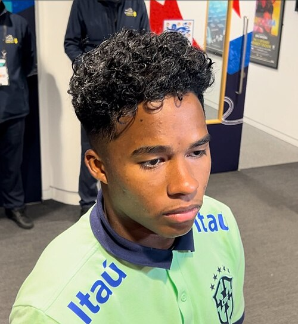
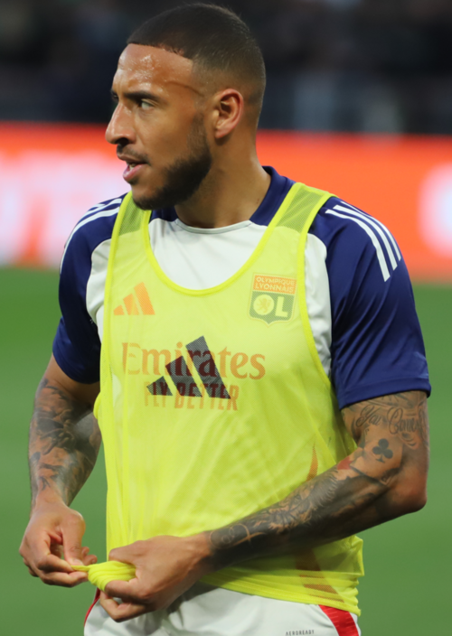
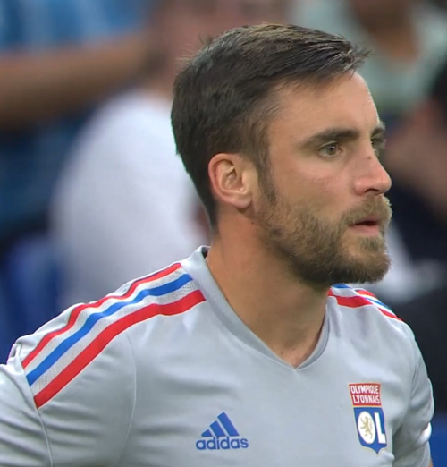

Olympique Lyonnais Portfolio
Current roster, squad value, top assets, U23 assets, honours, and market risk.

Olympique Lyonnais
France | Ligue 1 | Europe | UEFA
Roster source: Olympique Lyonnais | Checked 2026-05-24
Market Score vs Age
Squad portfolio shape by age and market score.
Signal read: Each point shows how squad age relates to market value.
Position Strength
GK, CB, FB, CM, W, CF portfolio balance.
Signal read: Bars compare strength across the main football position groups.
Squad Age Curve
Age distribution across current senior, prime, and veteran player groups.
Signal read: Use this chart to spot youth pipeline, prime core, and veteran risk.
U23 Pipeline
Young player supply by market score, role security, and squad confidence.
Signal read: Higher bars indicate stronger young-player depth inside the current squad.
Current Player Roster
| Player | Age | Position | ARES Score | Market Score | Tier | Trend | Profile |
|---|---|---|---|---|---|---|---|
 Endrick Quispe Mamani | 19 | FW | 66.7 | 80.7 | Rising Asset | Flat | Open profile |
 Corentin Tolisso | 31 | MF | 70.4 | 73.6 | Core Starter | Flat | Open profile |
 Nicolás Tagliafico | 33 | DF | 65.0 | 70.9 | Core Starter | Falling | Open profile |
U23 Assets
| Player | Age | Position | Market | Reason |
|---|---|---|---|---|
| Endrick Quispe Mamani | 19 | FW | 80.7 | Development FW profile with Ligue 1 context, 829 beta-estimated minutes, and licensed Commons photo coverage. |
Club Honours And Trophies
| Competition | Type | Count | Years | Source |
|---|---|---|---|---|
| Ligue 1 Winners (7) | Team honour | 12 | 1994, 2000, 2001, 2002, 2003, 2004, 2005, 2006 | https://en.wikipedia.org/wiki/Olympique_Lyonnais |
| Winners (7) | Team honour | 7 | 2001, 2002, 2003, 2004, 2005, 2006, 2007 | https://en.wikipedia.org/wiki/Olympique_Lyonnais |
| Runners | Team honour | 5 | 1994, 2000, 2009, 2014, 2015 | https://en.wikipedia.org/wiki/Olympique_Lyonnais |
| Ligue 2 Winners (3) | Team honour | 3 | 1950, 1953, 1988 | https://en.wikipedia.org/wiki/Olympique_Lyonnais |
| Winners (3) | Team honour | 3 | 1950, 1953, 1988 | https://en.wikipedia.org/wiki/Olympique_Lyonnais |
| Coupe de France Winners (5) | Team honour | 9 | 1962, 1963, 1966, 1970, 1972, 1975, 2007, 2011 | https://en.wikipedia.org/wiki/Olympique_Lyonnais |
| Winners (5) | Team honour | 5 | 1963, 1966, 1972, 2007, 2011 | https://en.wikipedia.org/wiki/Olympique_Lyonnais |
| Runners | Team honour | 4 | 1962, 1970, 1975, 2023 | https://en.wikipedia.org/wiki/Olympique_Lyonnais |
| Coupe de la Ligue Winners (1) | Team honour | 6 | 1995, 2000, 2006, 2011, 2013, 2019 | https://en.wikipedia.org/wiki/Olympique_Lyonnais |
| Winners (1) | Team honour | 1 | 2000 | https://en.wikipedia.org/wiki/Olympique_Lyonnais |
| Runners | Team honour | 5 | 1995, 2006, 2011, 2013, 2019 | https://en.wikipedia.org/wiki/Olympique_Lyonnais |
| Trophée des Champions Winners (8) | Team honour | 12 | 1967, 1973, 2002, 2003, 2004, 2005, 2006, 2007 | https://en.wikipedia.org/wiki/Olympique_Lyonnais |
| Winners (8) | Team honour | 8 | 1973, 2002, 2003, 2004, 2005, 2006, 2007, 2012 | https://en.wikipedia.org/wiki/Olympique_Lyonnais |
| Runners | Team honour | 4 | 1967, 2008, 2015, 2016 | https://en.wikipedia.org/wiki/Olympique_Lyonnais |
| UEFA Intertoto Cup Winners (1) | Team honour | 1 | 1997 | https://en.wikipedia.org/wiki/Olympique_Lyonnais |
| Winners (1) | Team honour | 1 | 1997 | https://en.wikipedia.org/wiki/Olympique_Lyonnais |
Transfer Needs
| Need | Position | Reason | Priority | Suggested Profile |
|---|---|---|---|---|
| Role security and U23 depth | Depth risk review | Squad portfolio balance uses ARES score, market score, age curve, and roster coverage. | Medium | Current roster players sorted by Market Score |
Source And Rights Note
Current roster and honours rows are sourced from Wikipedia where structured enough. Club images use safe non-logo Wikimedia Commons media only when a creator, license, source URL, checked date, and rights status are stored in the image registry; otherwise ARES shows a fallback visual.